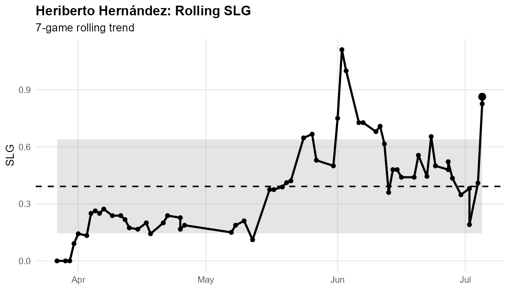
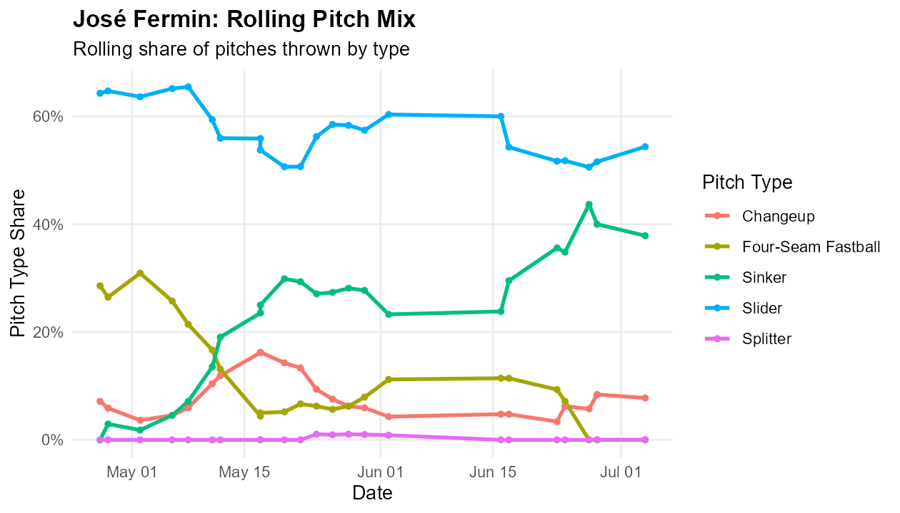
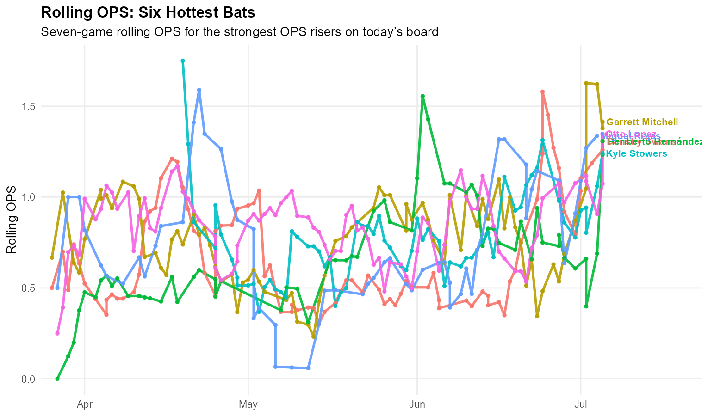
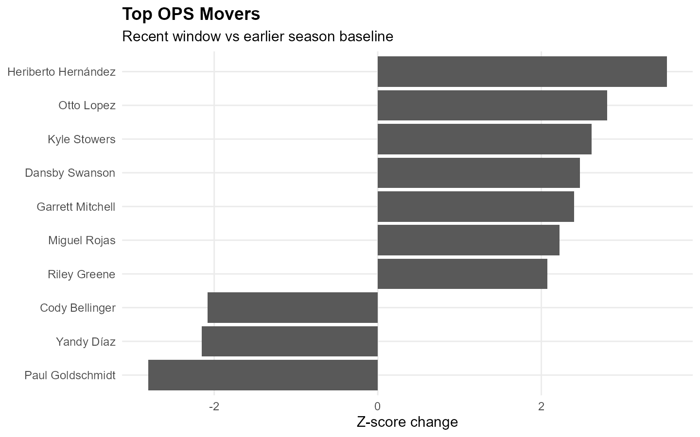

Lead Board
Weekly Leaderboard Reset: Heriberto Hernández Leads Today’s Movement Board
A daily baseball notebook generated from updated play-by-play data, leaderboards, recent form changes, pitcher usage changes, split notes, and SABRhood trend boards.
Featured Players
Hot bat and hot arm
Hot Bat
Heriberto Hernández leads the hitter movement board
Miami Marlins • SLG movement
Heriberto Hernández has one of the biggest upward movements in SLG on today’s board. His recent mark is 1.25 compared with a baseline of 0.392, good for a 3.64 z-score change across the qualified hitter pool.
Trend SLG
Signal 3.64 z
Recent 1.25
Season line: 0.236 / 0.303 / 0.449 with 10 HR.

Hot Arm
José Fermin is trending behind Command / walks gains
Los Angeles Angels • pitcher trend card
José Fermin grades as the top pitcher on today’s hot board, led by BB_pct with a 3.23 z-score signal.
K% 27.0%
Whiff% 32.0%
Best signal BB_pct
K% is at 27.0% recently, up from 22.0%.
Whiff% is at 32.0% recently, compared with 29.0% before the window.
Pitch mix: The main arsenal signal is the Sinker: usage moved from 23.1% to 37.9%, with whiff rate moving from 13.5% to 27.3%.

Pitch Lab
Pitch of the Day
Fastball command riser
Pitch of the Day: Sinker
José Fermin • Los Angeles Angels
José Fermin’s Sinker is the clearest pitch-level hook in today’s card. Usage moved from 23.1% to 37.9%, while whiff rate moved from 13.5% to 27.3%.
Usage 23.1% → 37.9%
Whiff 13.5% → 27.3%
Zone 55.8% → 74.4%
Split Lens
Where the profile bends
Hitter handedness split
Heriberto Hernández
vs LHP compared with vs RHP
The largest handedness split is SLG, with a raw L/R gap of 0.106.
Stat SLG
Diff 0.106
View Split
Pitcher handedness split
José Fermin
vs LHH compared with vs RHH
The largest handedness split is OPS, with a raw L/R gap of 0.288.
Stat OPS
Diff 0.288
View Split
Visual Read
Rolling OPS: Six Hottest Bats
Seven-game rolling OPS for the six strongest OPS risers on today’s movement board.

Chart of the Day
Top OPS Movers
Biggest 7-day movement in OPS relative to each hitter’s earlier season baseline.

Signal Boards
Who else is moving?
Pitcher Trends
Hot arm board
1
José Fermin Team: Los Angeles Angels • Type: Command / walks • Stat: BB_pct
1.6
2
Ryan Johnson Team: Los Angeles Angels • Type: Run prevention • Stat: OPS
1.4
3
Connor Prielipp Team: Minnesota Twins • Type: Miss bats • Stat: Whiff_pct
1.3
4
Tyler Alexander Team: Texas Rangers • Type: Strikeouts • Stat: K_pct
1.2
5
Brandon Eisert Team: Chicago White Sox • Type: Command / chase • Stat: Chase_pct
1.1
6
Jonathan Loáisiga Team: Arizona Diamondbacks • Type: Strikeouts • Stat: K_pct
0.9
7
Kumar Rocker Team: Texas Rangers • Type: Miss bats • Stat: Whiff_pct
0.9
Hitter Trends
Movement board
1
Heriberto Hernández Team: Miami Marlins • Stat: SLG • Move: Riser
3.6
2
Nolan Schanuel Team: Los Angeles Angels • Stat: Chase_pct • Move: Riser
3.5
3
Austin Wells Team: New York Yankees • Stat: K_pct • Move: Riser
3.5
4
Drew Millas Team: Washington Nationals • Stat: BB_pct • Move: Riser
3.3
5
Matt Vierling Team: Detroit Tigers • Stat: Chase_pct • Move: Riser
3.2
6
Denzer Guzman Team: Los Angeles Angels • Stat: HardHit_pct • Move: Faller
-3.1
7
Rafael Devers Team: San Francisco Giants • Stat: barrel_pct • Move: Riser
3.1
8
Taylor Trammell Team: Houston Astros • Stat: barrel_pct • Move: Riser
3.1
Trend Queue
Names to watch
Hitter
Heriberto Hernández
Miami Marlins • Riser SLG
SLG moved by 3.64 z-score points on the hitter board.
Hitter
Nolan Schanuel
Los Angeles Angels • Riser Chase_pct
Chase_pct moved by 3.55 z-score points on the hitter board.
Hitter
Austin Wells
New York Yankees • Riser K_pct
K_pct moved by 3.47 z-score points on the hitter board.
Pitcher
José Fermin
Los Angeles Angels • Command / walks
BB_pct is the top signal with a 3.23 z-score mark.
Pitcher
Ryan Johnson
Los Angeles Angels • Run prevention
OPS is the top signal with a 2.98 z-score mark.
Pitcher
Connor Prielipp
Minnesota Twins • Miss bats
Whiff_pct is the top signal with a 1.99 z-score mark.
Method
Trend key
Signal
Whiff Riser
A pitcher is missing more bats than his baseline.
Signal
Command Riser
A pitcher is finding the zone or limiting walks more effectively.
Signal
Usage Riser
A pitch is taking up more of the arsenal than usual.
Signal
Fastball Command Riser
A fastball-type pitch is gaining zone presence or setting up the arsenal better.
Signal
Hot Bat
A hitter has one of the strongest recent-vs-baseline offensive changes.
Signal
Split Lens
A quick check for whether handedness changes the player’s profile.
Last Night
Top bats
1
Heriberto Hernández Team: Miami Marlins • H: 3 • HR: 2 • TB: 10 • RBI: 2
34
2
Drew Gilbert Team: San Francisco Giants • H: 4 • HR: 1 • TB: 8 • RBI: 3
30
3
Riley Greene Team: Detroit Tigers • H: 3 • HR: 1 • TB: 8 • RBI: 4
30
4
Otto Lopez Team: Miami Marlins • H: 3 • HR: 1 • TB: 7 • RBI: 3
27
5
Otto Lopez Team: Miami Marlins • H: 3 • HR: 1 • TB: 7 • RBI: 3
26
6
Rafael Devers Team: San Francisco Giants • H: 2 • HR: 2 • TB: 8 • RBI: 2
24
Last Night
Top arms
1
Eury Pérez Team: Miami Marlins • IP: 7.0 • K: 8 • Whiffs: 12
72
2
Joe Ryan Team: Minnesota Twins • IP: 7.0 • K: 9 • Whiffs: 17
66.5
3
Yoshinobu Yamamoto Team: Los Angeles Dodgers • IP: 7.0 • K: 10 • Whiffs: 14
66
4
Jesús Luzardo Team: Philadelphia Phillies • IP: 6.0 • K: 9 • Whiffs: 19
59.5
5
Sandy Alcantara Team: Miami Marlins • IP: 8.0 • K: 8 • Whiffs: 10
56
6
Emerson Hancock Team: Seattle Mariners • IP: 7.0 • K: 5 • Whiffs: 14
53